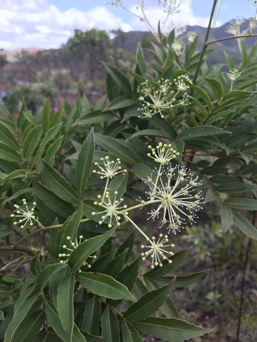

Myodocarpaceae
(No widely accepted common name)
Myodocarpaceae is a small family of trees and shrubs belonging to the order Apiales within the Asterids clade (Campanulids). Comprising only two genera, Myodocarpus and Delarbrea, the family is endemic to New Caledonia and Malesia (specifically east Malesia). They are characterized by pinnately compound leaves, often large terminal inflorescences of umbels, small 5-merous flowers with inferior ovaries, and distinctive fruits which are often winged schizocarps.
Overview
The Myodocarpaceae family includes about 19 species in two genera, Myodocarpus (endemic to New Caledonia) and Delarbrea (New Caledonia and east Malesia). These woody plants were previously included within the large Araliaceae family (ginseng/ivy family) but were segregated based on molecular phylogenetic data and distinct morphological features, particularly fruit characteristics.
They typically inhabit rainforests or shrublands within their restricted geographic range. The family is notable for the distinctive winged fruits of Myodocarpus, where the schizocarp splits into two samara-like mericarps adapted for wind dispersal, a feature unusual within the Apiales order where fleshy fruits or non-winged schizocarps are more common.
The family has no significant economic importance but is of scientific interest due to its phylogenetic position within Apiales and its restricted endemism in the biodiversity hotspots of New Caledonia and Malesia.
Quick Facts
- Scientific Name: Myodocarpaceae Doweld
- Common Name: (None widely used)
- Number of Genera: 2 (Myodocarpus, Delarbrea)
- Number of Species: Approximately 19
- Distribution: Endemic to New Caledonia and east Malesia.
- Evolutionary Group: Eudicots - Asterids - Campanulids - Apiales
Key Characteristics
Growth Form and Habit
Evergreen shrubs or small to medium-sized trees. Resin canals are often present in tissues.
Leaves
Leaves are alternate and pinnately compound (typically imparipinnate or paripinnate), though sometimes simple in juvenile stages or specific species. Leaflets are usually entire or sometimes toothed. Stipules are often present, sometimes large, intrapetiolar, or forming a sheath around the stem.
Inflorescence
Inflorescences are typically large, terminal, and highly branched, consisting of compound umbels or panicles of umbels. Bracts are usually present but often small.
Flowers
Flowers are small, actinomorphic (radially symmetrical), usually 5-merous, and can be bisexual or unisexual (plants then polygamous or dioecious). Key features include:
- Calyx: Sepals are reduced to 5 small teeth or lobes, or essentially absent, forming a rim on the inferior ovary.
- Corolla: 5 petals, free, often white or yellowish, typically with an inflexed tip (bent inwards).
- Androecium: 5 stamens, alternating with the petals, filaments distinct. Anthers dehisce longitudinally.
- Gynoecium: Ovary is inferior, composed of typically 2 fused carpels (syncarpous). It is usually bilocular (two chambers), with a single pendulous ovule in each locule. Styles are typically 2, free or fused at the base, often persistent on the fruit, sometimes seated on a stylopodium (a swollen base).
Fruits and Seeds
The fruit is typically a schizocarp that splits into two one-seeded segments (mericarps). In Myodocarpus, the mericarps are strongly flattened and broadly winged (samara-like), adapted for wind dispersal. In Delarbrea, the fruit is often a fleshy drupe or drupe-like schizocarp. Seeds contain endosperm.
Chemical Characteristics
Presence of resin canals is common. Like other Apiales, they may contain various secondary metabolites such as polyacetylenes, sesquiterpenes, and phenolic compounds, though less studied than larger families like Apiaceae or Araliaceae.
Field Identification
Identifying Myodocarpaceae relies on recognizing their woody habit, pinnately compound leaves, terminal inflorescences of umbels, small 5-merous flowers with inferior ovaries, and especially the distinctive winged fruits (in Myodocarpus), combined with their specific geographic location (New Caledonia/Malesia).
Primary Identification Features
- Habit: Trees or shrubs.
- Leaves: Alternate, pinnately compound (usually).
- Inflorescence: Large, terminal, compound umbels or panicles of umbels.
- Flowers: Small, 5-merous, actinomorphic, often unisexual.
- Ovary: Inferior, typically 2-locular.
- Fruit: Schizocarp with 2 flattened, winged mericarps (Myodocarpus) or drupaceous (Delarbrea).
- Distribution: New Caledonia or East Malesia only.
Secondary Identification Features
- Stipules: Often present, sometimes sheathing.
- Petals: Often with inflexed tips.
- Styles: Typically 2, often persistent.
- Resin Canals: May be present.
Seasonal Identification Tips
- Year-round: Woody habit and compound leaves are present year-round.
- Flowering/Fruiting Season: The large terminal inflorescences are conspicuous when present. The highly distinctive winged fruits of Myodocarpus are key for identification when available.
Common Confusion Points
- Araliaceae (Ginseng/Ivy Family): Closely related and previously included Myodocarpaceae. Araliaceae often have similar compound leaves and umbellate inflorescences, but typically have fruit that is a berry or drupe (not a winged schizocarp), and often have more fleshy flowers or different stylar structures.
- Apiaceae (Carrot Family): Also has umbellate inflorescences and schizocarpic fruits, but Apiaceae are overwhelmingly herbaceous (not trees/shrubs), usually have hollow internodes, sheathing leaf bases, and fruits (mericarps) that are typically ribbed and aromatic but not broadly winged like Myodocarpus.
- Other families with compound leaves (e.g., Fabaceae, Sapindaceae): Differ significantly in floral structure (e.g., zygomorphic flowers in Fabaceae, often superior ovaries, different fruit types).
Field Guide Quick Reference
Look For:
- Trees/shrubs (New Caledonia/Malesia)
- Alternate, pinnately compound leaves
- Terminal compound umbels/panicles
- Small, 5-merous flowers
- Inferior ovary (2-locular)
- Winged schizocarp (Myodocarpus)
- Drupe (Delarbrea)
Key Variations:
- Fruit type (winged vs. drupaceous)
- Leaflet shape and margin
- Presence/absence of sexuality (bisexual vs. unisexual flowers)
Notable Examples
The family consists of two genera:

Myodocarpus spp.
(Myodocarpus)
A genus of about 12 species endemic to New Caledonia. These are shrubs or small trees characterized by their pinnately compound leaves and highly distinctive fruits – schizocarps that split into two broadly winged, flattened, samara-like mericarps adapted for wind dispersal.

Delarbrea spp.
(Delarbrea)
A genus of about 7 species found in New Caledonia and extending into eastern Malesia (New Guinea, Solomon Islands, Vanuatu). These are trees or shrubs similar vegetatively to Myodocarpus but differ significantly in having fruit that is typically a fleshy drupe or drupe-like schizocarp, not winged.
Phylogeny and Classification
Myodocarpaceae belongs to the order Apiales, which is part of the Campanulids (Euasterids II) clade within the Asterids. This placement is strongly supported by molecular phylogenetic studies.
Within Apiales, Myodocarpaceae forms a distinct lineage that diverged relatively early. It is considered closely related to the core Apiales families: Apiaceae (carrot family) and Araliaceae (ginseng family). Its separation from Araliaceae clarifies the relationships within this part of the Apiales order, highlighting fruit evolution (especially the unique winged schizocarps of Myodocarpus) as a key divergence.
Position in Plant Phylogeny
- Kingdom: Plantae
- Clade: Angiosperms (Flowering plants)
- Clade: Eudicots
- Clade: Asterids
- Clade: Campanulids (Euasterids II)
- Order: Apiales
- Family: Myodocarpaceae
Evolutionary Significance
Myodocarpaceae is significant for understanding Apiales evolution:
- Fruit Evolution: The unique winged schizocarp in Myodocarpus represents a specialized dispersal adaptation within Apiales, contrasting with the more common fleshy fruits or non-winged schizocarps.
- Phylogenetic Relationships: Its recognition helps resolve the phylogeny of the Araliaceae-Apiaceae complex.
- Biogeography: Its restricted endemism in New Caledonia and Malesia provides insights into the historical biogeography and diversification of Apiales in the Australasian region, likely reflecting ancient Gondwanan connections.
- Woody Habit in Apiales: Along with Araliaceae and Pittosporaceae, it represents the woody habit within an order that also contains the vast herbaceous family Apiaceae.